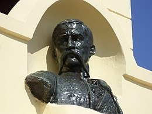
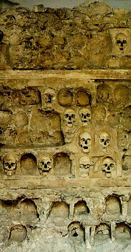
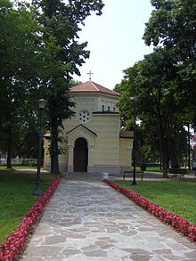

|
1. Oj, vojvodo Sindjeliću! Srpski sine od Resave slavne! Ti si znao Srbina zakleti, Ako treba za slobodu mreti. 2. Puška puce, boj se bije, A Sindjelić ljutu bitku bije. Ljutu bitku bije za slobodu, za slobodu srpskome narodu. 3. Oj vojvodo, ti si pao! Ali dušman jos od tebe strepi. Ti si turske posekao glave, Zato tebe Srbi rado slave. 4. Oj vojvodo Sindjeliću! Srpski sine od Resave slavne! Milije je Srbinu umreti Nego robom ikada živeti! Nego robom do groba živeti! |
1. O Voïvode Sindjelić! Serbe, fils de la glorieuse Resava! Tu as su faire jurer aux Serbes, S'il le fallait, de mourir pour la liberté. 2. Coups de feu et combat qui fait rage: Ah, Sindjelić se bat comme un lion. Liberté, ta conquête est bien âpre, Pût-il aux Serbes en faire don! 3. O Voïvode tu tombas! Mais l'ennemi tremble à ton nom! Combien de têtes turques furent tranchées! Les Serbes t'en sont vivement reconnaissants. 4. O Voïvode Sindjelić! Serbe, fils de la glorieuse Resava! Un Serbe aime mieux mourir Que vivre jamais dans l'esclavage, Qu'y demeurer jusqu'au tombeau! |

Stevan Sinđelić
(en serbe cyrillique : Стеван Синђелић ; né le 19 mai 1770 à Vojska - mort le 31 mai 1809 au mont Čegar) était l'un des chefs ("vojvoda") du Premier soulèvement serbe contre les Ottomans.
Stevan Sinđelić conduisait les rebelles à partir de la rivière Resava et commença par battre les Turcs près de Medveđa. Il participa également aux batailles d’Ivankovac (1805) et de Delingrad (1806) ; il libéra Ćuprija, Paraćin et Ražanj.
C'est à la suite de la bataille du mont Čegar qu'il est devenu un personnage mythique.
La bataille du Mont Čegar (19 mai 1809)
Dans la première tranchée sur le mont Čegar, il était accompagné de 3 000 soldats et disposait d'une grande réserve de munitions. Les commandants Hajduk Veljko et Petar Dobrnjac s'étaient retirés avec leurs armées. Quand les Turcs apprirent que ces deux chefs étaient partis et que la position des Serbes s'en trouvait affaiblie, ils sortirent de la forteresse de Niš, le 19 mai 1809 et marchèrent contre les troupes de Sinđelić avec 16 000 hommes et quatre canons. La bataille eut lieu au mont Čegar,à côté de Niš.
Les Turcs lancèrent quatre vagues d'attaques mais se firent repousser à chaque fois. Les Turcs lancèrent alors toute leur force dans un assaut. Stevan, voyant la défaite proche, hurla « Mes frères, se sauve qui peut et qui veut, je vous libère de votre serment!».
Puis après avoir attiré un grand nombre de Turcs vers lui, il se sacrifia en tirant dans un baril de poudre qui était à côté de lui, tuant un grand nombre d’adversaires.
Cette bataille coûta la vie à 3 000 Serbes et environ 10 000 Turcs. Chez les Serbes, seul Petko, l'écuyer de Stevan, survécut. Il rapporta l'histoire de la bataille une fois revenu parmi les Serbes.
La Tour des crânes
Après la retraite de l’armée serbe, Hurşid Ahmed Paşa, qui commandait l’armée ottomane, fit élever une tour à Niš avec les crânes des soldats serbes tués au cours de la bataille, en signe d’avertissement pour tous les rebelles. Le crâne de Stevan Sinđelić fut placé au sommet de la tour. Les Serbes appelèrent cette tour Ćele kula (la Tour des crânes).
La tour resta en place après 1878, lorsque Niš fut libérée de la domination ottomane. En 1892, une chapelle fut construite pour honorer les morts de la bataille du mont Čegar.
En 1833, le poète Lamartine fit apposer une plaque sur la tour. On peut y lire les mots suivants :
« Qu'ils laissent subsister ce monument ! Il apprendra à leurs enfants ce que vaut l'indépendance d'un peuple, en leur montrant à quel prix leurs pères l'ont payée ».
On peut ajouter à l'exposé très complet de Wikipédia qu'à l'origine la tour comptait 952 crânes et qu'il en reste aujourd'hui 59.
Par ailleurs, le commandant turc chargea des fourreurs de détacher la peau des crânes et il fit envoyer ces macabres baudruches bourrées de coton au Sultan, à Istamboul.
La strophe 3 indique que les mentalités n'étaient guère différentes dans les deux camps. D'ailleurs,les mots importants utilisés dans le chant et à propos de ces événements tragiques sont d'origine turque: "dušman", l'ennemi, "Hajduk", le brigand, et les sinistres "Ćele" et "kula", crâne et tour!
|
 |
 |